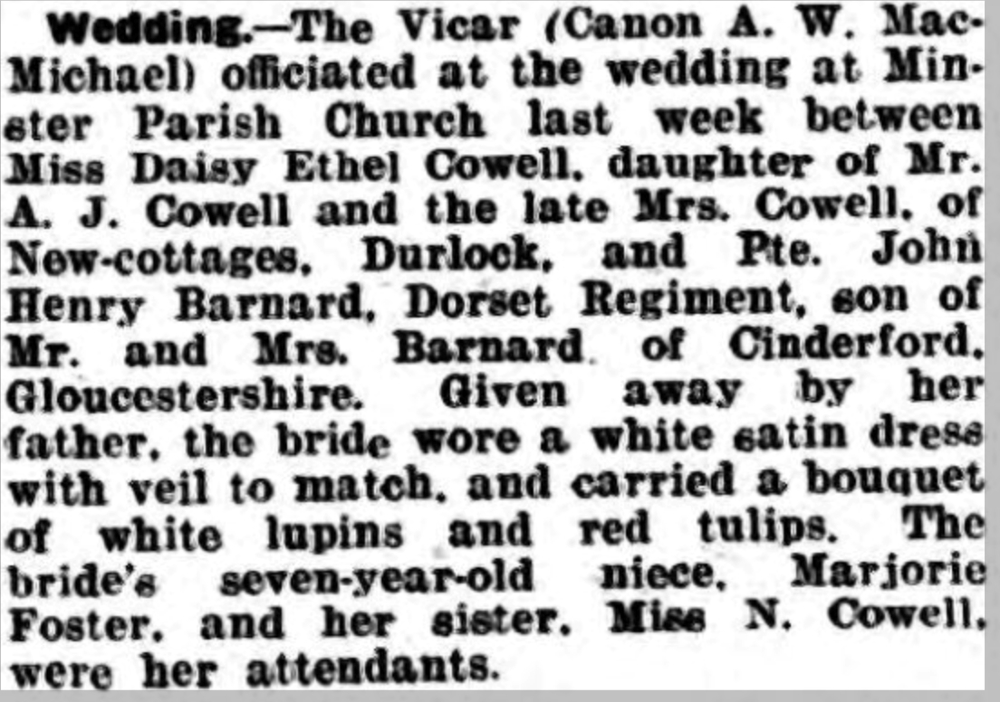

Daisy Ethel Barnard (née Cowell) 1925 - c2004
[ Home ] | [ Calendar ] | [ Surnames Index ] | [ Family History ]The daughter of Alfred Cowell (a transport driver) and Fanny AustenDaisy Cowell, the first cousin once-removed on the mother's side of Nigel Horne, was born in Thanet, Kent, England on Jul 5, 19251,2,3 and. She married John Barnard (with whom she had 1 surviving child) Minster in Thanet around May 19434.
She died c. Feb 2004 in Forest of Dean, Gloucestershire, England1,3.
Parents
- Alfred John was born on May 8, 1880
- Fanny was born c. May 1883
Citations
- England & Wales deaths 1837-2007 - Findmypast
- England & Wales, Birth Index: 1916-2005 Online publication - Provo, UT, USA: The Generations Network, Inc., 2008.Original data - General Register Office. England and Wales Civil Registration Indexes. London, England: General Register Office. © Crown copyright. Published by permission of the Cont
- England & Wales, Death Index: 1984-2005 Online publication - Provo, UT, USA: The Generations Network, Inc., 2007.Original data - General Register Office. England and Wales Civil Registration Indexes. London, England: General Register Office. © Crown copyright. Published by permission of the Cont
- England & Wales, Marriage Index: 1916-2005 Online publication - Provo, UT, USA: The Generations Network, Inc., 2009.Original data - General Register Office. England and Wales Civil Registration Indexes. London, England: General Register Office. © Crown copyright. Published by permission of the Cont
Media
Thanet Advertiser 25-5-1943

England & Wales marriages 1837-2008 - BMD/M/1943/2/AZ/000250/002
England & Wales births 1837-2006 - BMD/B/1925/3/AZ/000276/071
England & Wales deaths 1837-2007 - BMD/D/2004/3/85850708
Family Tree

Generated by ged2site. Last updated on Nov 13, 2024